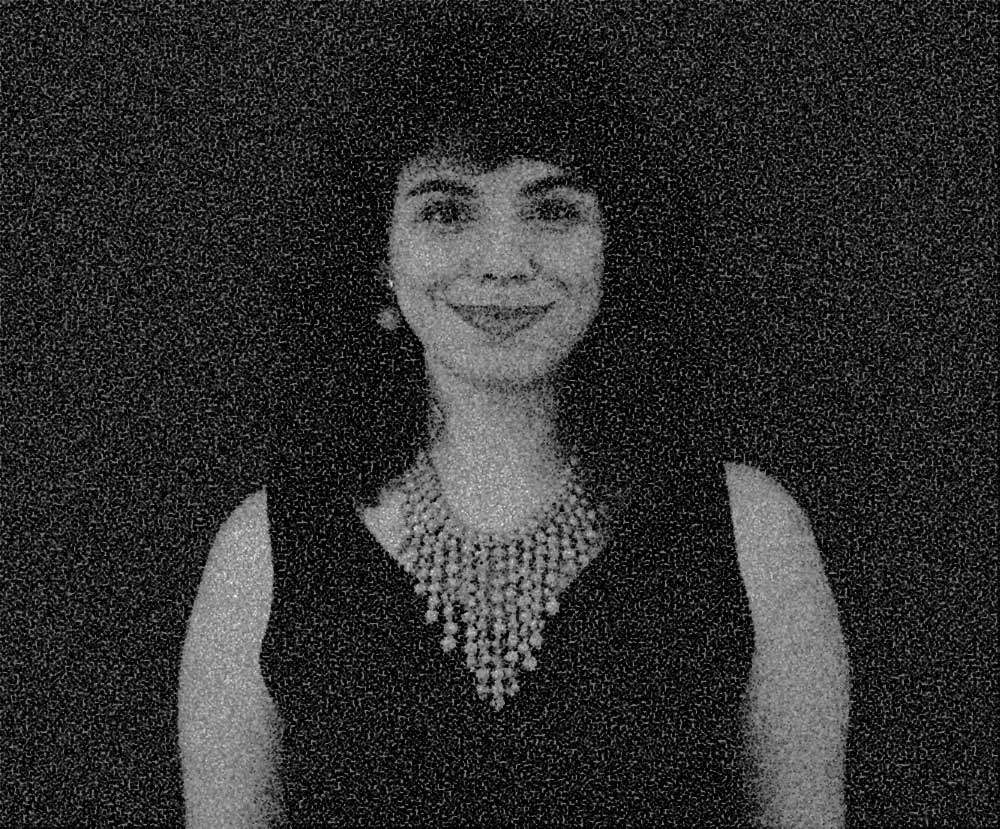
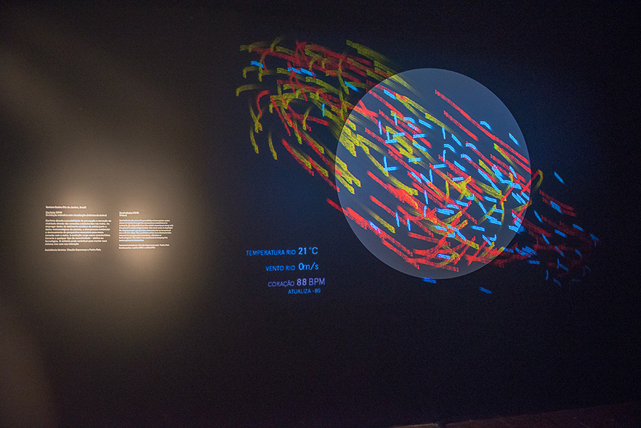

BIO DO ARTISTA

Artista-pesquisadora e programadora. É fundadora e diretora do estúdio Ambos&& que une design, arte e tecnologia para projetos culturais e educativos. Desde 2018, Barbara Castro é professora do Departamento de Artes & Design da PUC-Rio. Atualmente é doutoranda em Artes Visuais na Escola de Belas Artes da UFRJ, mesma instituição em que defendeu seu mestrado em 2013 em parceria com o Instituto de Matemática Pura e Aplicada (IMPA). Além disso, atuou como designer de visualização de dados do Laboratório de Visualidade e Visualização (Labvis) da UFRJ para o Banco Interamericano de Desenvolvimento. Na Escola de Belas Artes também mantém colaboração com o Núcleo de Arte e Novos Organismos (NANO). Sua pesquisa em arte e tecnologia já foi apresentada na França, Dinamarca, Portugal, Colômbia e no Brasil em locais como Museu de Arte Moderna (RJ), Museu Nacional da República (DF), Instituto Inhotim (MG), entre outros. Seus trabalhos já foram citados em diversas revistas acadêmicas e eventos internacionais como ‘Siggraph Asia’ na China, por exemplo.
OBRAS

Disritmia discute a possibilidade de percepção e sensação de vitalidade através das conexões estabelecidas nas redes. Ao empregar dados do batimento cardíaco da artista junto a dados meteorológicos do planeta, a obra procura evidenciar o deslocamento de perspectiva necessário para nossa conexão com o outro. A oscilação surge como característica inerente a qualquer tipo de conectividade, afetiva ou tecnológica. O visitante pode contribuir para manter esse sistema vivo com sua interação.